単語を、
場所で覚える。
語学の探し物ゲーム「記憶の町」。地図で物を探し、タップで発音を聞く。物の位置は動かないので、探すたびに復習になります。手描きの 4 エリアから始め、自動拡張で 38 エリア・3,113 語まで広げました。
記憶の町 全体図
TOWN MAP · 38 AREAS2026-10-05
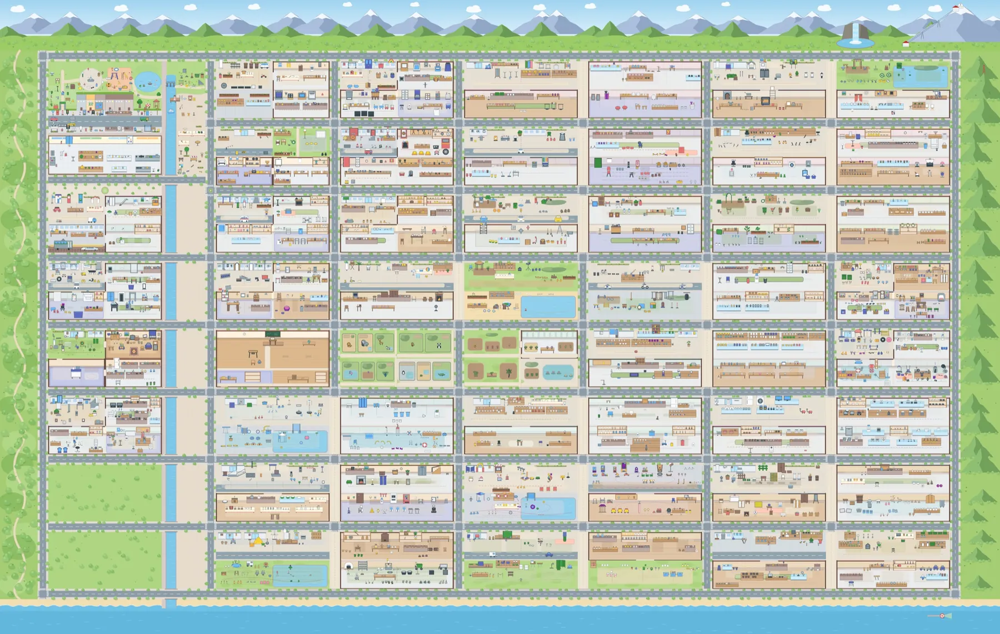
- 手描き 4（左上）
- 手作業 3（動物園・植物園・教室）
- 自動生成 31
- 左下の草地＝次の自動区画
- エリア38うち 31 は自動で追加
- 単語3,113語英・日・中の 3 言語
- 音声ファイル9,450本全単語 × 3 言語
- 自動テスト358件単体 343・E2E 15。全件通過でのみコミット
記憶の宮殿を、
遊べる町にした。
原点は記憶術「記憶の宮殿（場所法）」。決まった場所に物を置き、場所ごと覚える。探すことが復習になり、間違えてタップした物も 1 語の学習になります。
- ↓
手がかりを、段階的に減らす。
絵 → 文字 → 音 → 記憶。最後は場所の記憶が主役になります。絵は全ステージに残します（理由は次の章）。
スタンプラリー
公園エリア · 56 個の物★ で次のステージ解放
- STAGE1
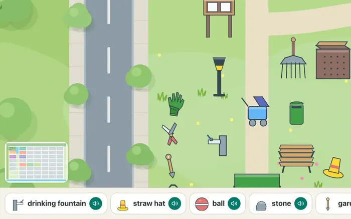
1絵で探す
絵と単語の一覧から探す。ヒント全開で配置に慣れる。
- STAGE2
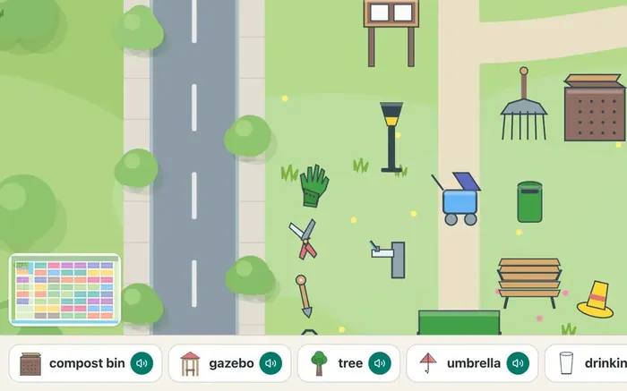
2文字で探す
単語と絵を手がかりに、文字と形を結びつける。
- STAGE3
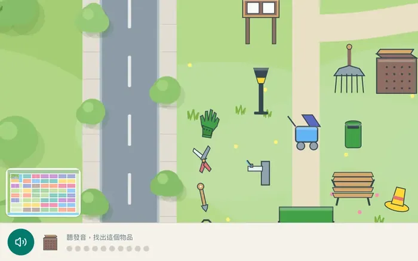
3音で探す
発音を聞いて、音と位置を結びつける。
- STAGE4
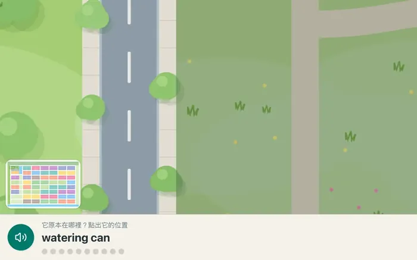
4記憶で探す
物が消えた町で、元の位置を当てる。ヒントは 1 問 1 回。
遊ぶ人を見て、
プロダクトを直す。
家族が実際に遊ぶ様子を横で観察し、手が止まった所を記録。原因を整理して、改善に反映しました。
- 3直した所
- 1共通する判断
観察ノート
手が止まった所 → 原因 → 変えたこと文字だけ・音だけの問題で、何を探すのか分からない
- 変えたこと
- 全ステージの問題に絵を付ける
- 判断
- 「何を探すか」で迷わせず、「どこにあるか」の記憶に集中させる
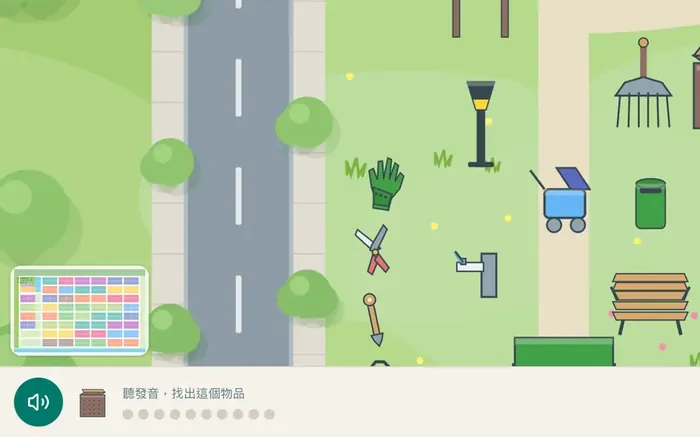
物の置き方に脈絡がなく、探す手がかりにならない
- 変えたこと
- 現実の場面どおりに配置（棚には商品、机には文房具）
- 判断
- 配置ロジックを部品化し、自動拡張の全エリアに同じ規則を適用
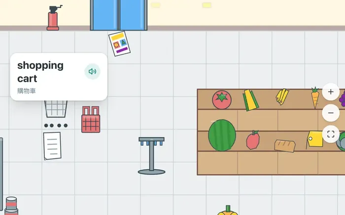
記憶ステージで手が止まる
- 変えたこと
- ヒントを 3 回から 10 回（1 問 1 回）に
- 判断
- 難しさは残し、詰まって進めない所だけ外す
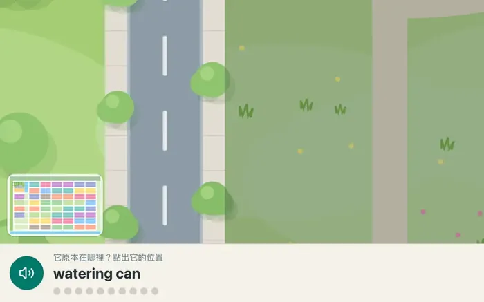
共通する判断：難しさは「場所を覚える」ことだけに残し、それ以外で止まる所はすべて外す。
観察は一度で終わらせない。物ごとのプレイ記録を取り、見つけにくい物は自動で要確認リストへ載せる。
町を広げるのは AI、
止めるのはテスト。
13 工程を 30 分おきに 1 ステップ、全自動で進めます。起動役は miko-ws、AI の作業は codex。AI が作ったものは、システムか別の AI が必ず検査してから次へ。人が見るのは最後だけです。
- システムの検査不合格は除外。先へ進めない
- AI の審査要確認リストに載せるだけ。止めはしない
- 人リストを見て、遊んで確かめる
エリア追加 工程表
1 エリアごと · 13 工程- 01企画担当4 区画 × 100 語を挙げる
- 02形式チェックID・3 言語・重複を検査✕ NG の語は除外
- 03語学レビュー担当自然さ・読み・場所を確認。直せるのは中・日・読みだけ
- 04作画担当SVG を描く。失敗時は最大 4 回再生成
- 05サニタイズホワイトリストにないタグを除去
- 06建物設計担当壁・床を選択肢から選ぶ
- 07配置とロック並べて座標を固定
- 08発音担当音声を生成し、音声認識で検査
- 09テストとコミット全テスト通過でコミット✕ 3 回失敗で中止
- 10描画チェック・自動プレイ全 SVG を描き、押せるか測る⚑ 知らせる
- 11見た目レビュー担当絵と説明の一致を判定⚑ 知らせる
- 12構図レビュー担当置き方を 1〜5 点で採点⚑ 知らせる
- 13リストを見て、遊んで、取り込む要確認リストを見て取り込む
人の手を入れずに、
町が増えた。
自動で追加された 31 エリアのうち 6 つ。消印は撮影日です。
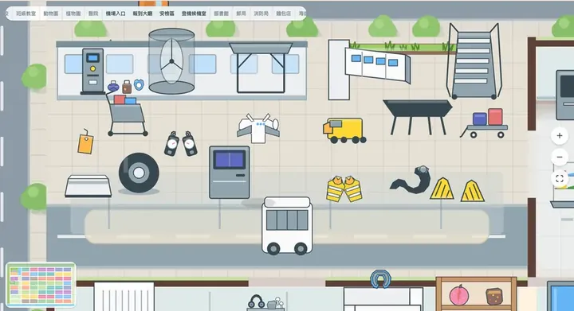
10.08
la-game
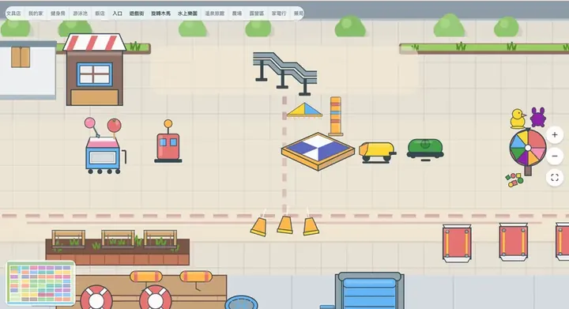
10.08
la-game
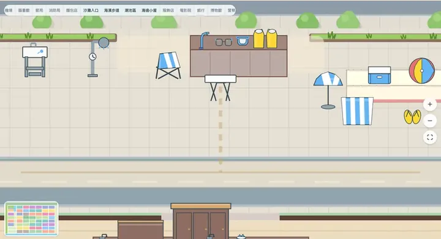
10.08
la-game
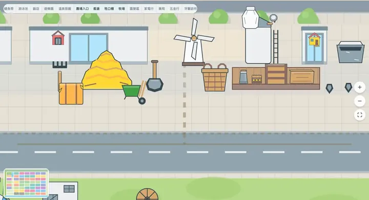
10.08
la-game
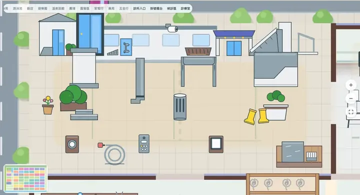
10.08
la-game
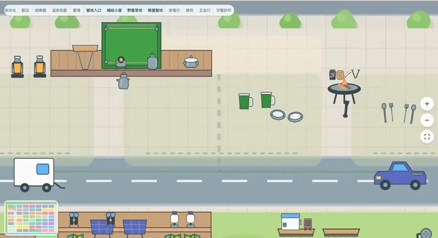
10.08
la-game
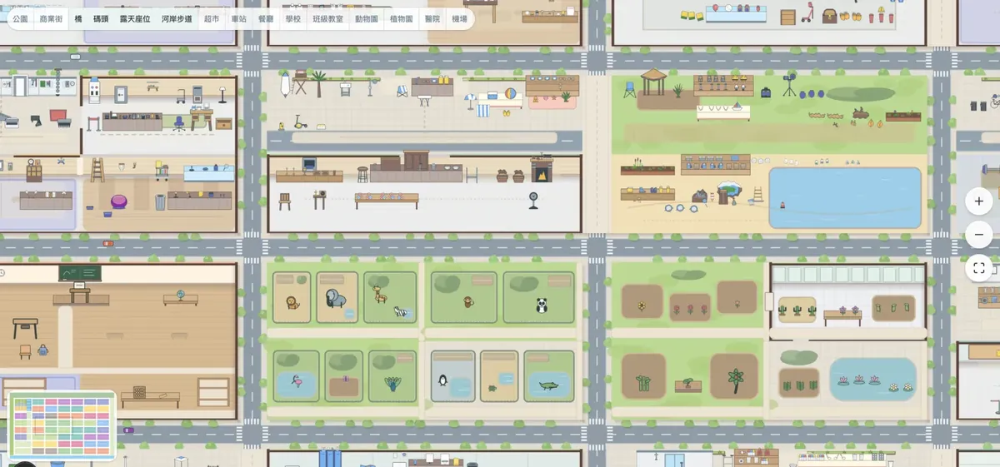
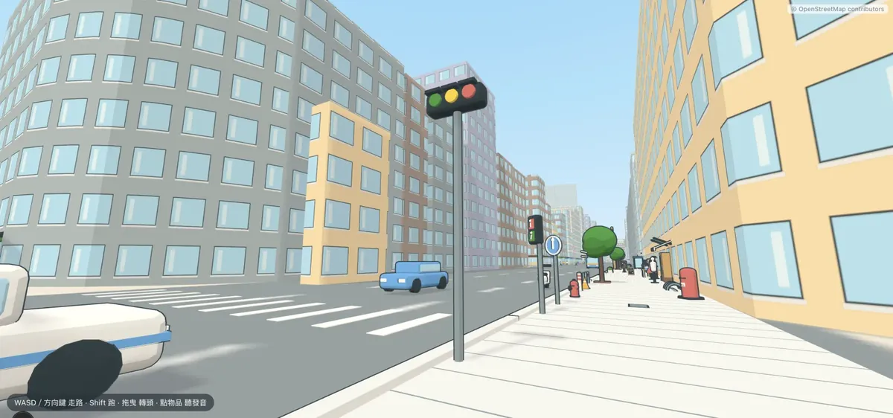
自動化の前に、
守るものを決めた。
町が勝手に増えても、学習の成果は壊さない。壊してはいけないものを、先に 4 つ決めました。
物の位置は、公開後に変えない。
覚えた位置こそが学習の成果だから。
絵と背景に、文字を入れない。
絵は全言語共通。差し替えるのは単語と音声だけ。
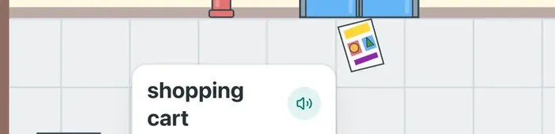
失敗したら、止める。
原因はログに残り、止まった工程から自動で再試行する。
ゲームのルールは、純粋関数で書く。
UI から切り離してテスト先行。
13 日で 31 エリア。
途中の人の手は0 回。
- 38エリア
- 3,113単語
- 358自動テスト
- 9,450音声
自動拡張の品質管理について、お話しできます。ソースコードは MIT ライセンスで GitHub に公開しています。
データは 2026-10-05 時点 · 開発記録 2026-09-22〜10-05 · la-game（Next.js 16 / React 19 / TypeScript）